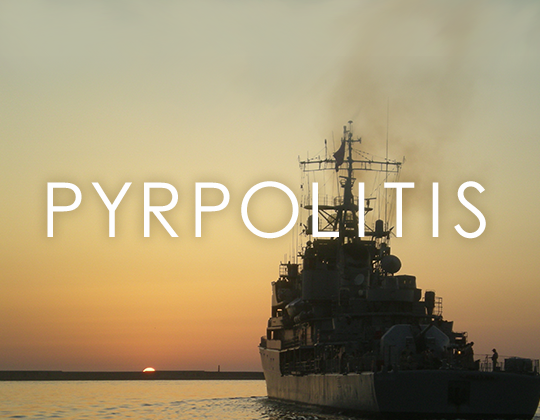

Original Concept By: Dimitris Dranidis
Date: January 30th 2014
Location: Agean Sea
Playable Side: Greece
Duration: 8 Hours
Pyrpolitis (Firestarter) 1/14 was a COMAO exercise executed by the rapid-reaction elements of the Hellenic Air Force (HAF) in the early hours of Thursday, Jan 30 2014, as part of the the larger Astrapi (Lightning) 1/14 joint-force exercise. During the exercise, aircraft from multiple HAF airbases participated in assaulting a strong naval formation (and its air cover) off the island of Chios. This is a reproduction of the exercise scenario.